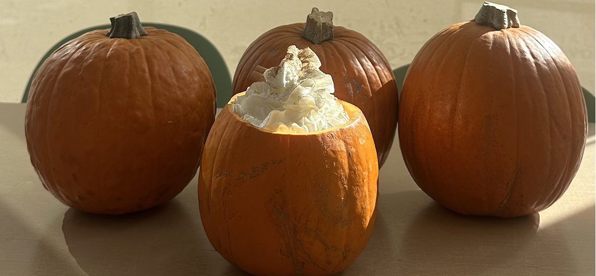
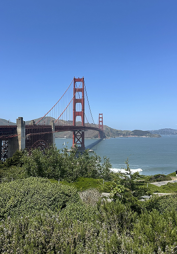

Fall in Love with PSL Season
Fall in San Francisco means its officially Pumpkin Spice Latte Season – or at least we try to make it feel like fall while still being in 70-ish degree weather sweating in our oversize sweaters and dodging Karl the Fog. Nevertheless, the San Francisco community's efforts never go unnoticed, especially when you see just how creative local cafes can get just to give us that fall vibe. While everywhere else is getting the crispy fall weather, we are ordering our PSLs iced in order to survive the afternoon heat
Whether you're capturing the perfect aesthetic shot, finding a reasonably priced coffee in San Francisco, or having to wait in long lines that wrap around an entire block, the hunt for the best seasonal brew is no joke. I’ve teamed up with some of my friends – Camila, Tauane, and Sophia – to test, rank, and brutally (or lovingly) review some of the most talked about Iced PSL’s throughout the city. We will be rating them out of 5 across five essential categories: Taste (how pumpkiny is it really?), Sweetness (too sugary or too bitter?), Toppings (are we getting a basic drizzle or a mountain of whipped cream?), Price (is it a student-budget tragedy or highway robbery?), and Creativity (is it actually unique or just a Pinterest knockoff?).
